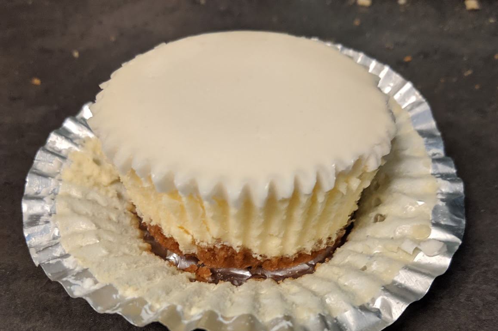

Grandma's Two Layer Cheesecake

Got this recipe from my grandmother, I've made my own modifications to make it into a cupcake size as well.
Serving size is one pie. Can fill 8-9" springform pan.
Ingredients:
- 1 sleeve graham crackers
- 3 teaspoon sugar
- 3 teaspoon unsalted butter
- 3 teaspoon ground cinnamon (optional)
- 2 8oz packages of cream cheese
- 2 large eggs
- 1/4 cup granulated white sugar
- 1/4 teaspoon vanilla extract
Crust
Filling
- 1/2 pint sour cream
- 1/2 teaspoon vanilla extract
- 3 tablespoon granulated white sugar
Topping
Directions:
Preheat oven to 350F
- Crush graham crackers and mix with sugar and melted butter. Add cinnamon if you want as well.
- Spread graham crackers into pie tin and bake at 350F for 10 minutes or until slightly brown.
- Mix cream cheese until smooth.
- Add in eggs, sugar and vanilla extract.
- Mix until well incorporated and then pour into pie shell.
- Bake at 350F for 30-35 minutes.
- Remove and let cool while preparing topping.
- Mix together topping ingredients; sour cream, sugar, and vanilla extract.
- Pour on to of cooled cheesecake.
- Bake at 425F for 8 minutes.
- Let cool at room temperature before chilling. Best served cold.
Variations:
TBA